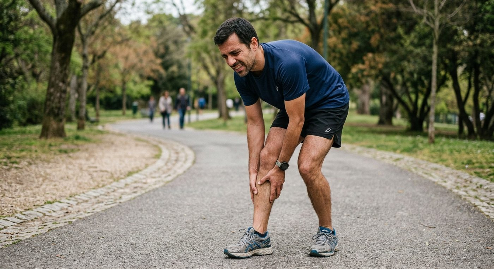
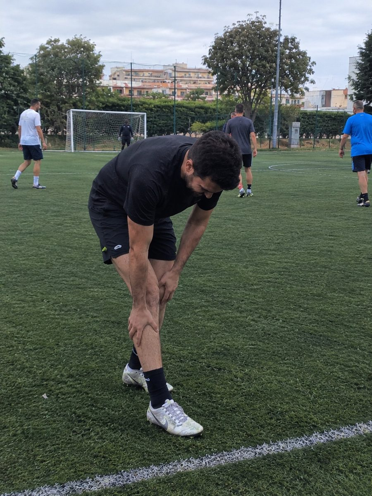

A dor não passa com descanso: passa quando a canela fica forte o suficiente para aguentar o impacto. Exercícios curtos, em casa, mais o plano para voltares a correr.
€19,90, pagamento único. Garantia de 15 dias.
Se leste os cinco e disseste "sou eu" em pelo menos três, esta página foi escrita para ti.
Voltas a treinar cheio de vontade. Aos poucos minutos, a canela começa a arder.
Paras uma semana. Gelo, comprimido, descanso. A dor passa e tu pensas que já está.
Voltas a correr. À primeira ou à segunda saída, ela está lá outra vez, no mesmo sítio.
Compras ténis novos, mudas a passada, procuras vídeos. Alguma coisa melhora, mas a canela volta.
Começas a espaçar os treinos. Depois deixas de marcar. E a pouco e pouco deixas de ir.
A canelite aparece quando pedes ao osso e ao músculo da perna mais do que eles estão preparados para aguentar. Não é fraqueza, nem falta de jeito, nem idade. É contas: carga a mais, preparação a menos.
Por isso descansar alivia mas não resolve. O descanso tira a carga, e é por isso que a dor passa. Só que, quando voltas, a canela continua exatamente tão despreparada como estava, e a carga volta toda de uma vez. É o mesmo ciclo, a começar outra vez.
O que muda o jogo não é parar mais tempo. É fortalecer a canela enquanto vais treinando, com carga a subir aos poucos, até ela aguentar o impacto sem se queixar. A dor não se combate de frente: ela vai-se embora sozinha quando a perna fica forte o suficiente para o que lhe pedes.
Não é uma lista de exercícios soltos da internet. É uma sequência, e a ordem é que faz a diferença.
Primeiro tira-se o fogo. Os movimentos da primeira fase baixam a irritação da zona e dão-te alívio já nos primeiros dias, sem te obrigar a parar de treinar.
Depois trabalha-se o que ninguém trabalha: o tibial, a barriga da perna e o pé. São eles que absorvem o impacto que hoje vai todo para o osso. É aqui que a dor deixa de voltar.
E depois o regresso. Quanto correr, a que ritmo e quando subir, semana a semana, para não repetires o erro que trouxe a dor da primeira vez.
Daqui a algumas semanas, sais de casa para correr e não pensas na canela. Marcas o jogo de quinta sem fazer contas ao que vem depois. E quando aumentas o ritmo, a perna acompanha em vez de travar. Não porque a dor se calou, mas porque deixou de ter motivo para aparecer.

Jogo à bola às terças e quintas desde os meus vinte e poucos e há coisa de dois anos comecei com aquela dor na parte da frente da canela. Ao princípio só ardia nos primeiros minutos e depois passava, por isso fui andando com aquilo. Depois começou a doer no dia seguinte, a descer escadas e tudo. Falhei quase a época toda. O que me safou foi mesmo o fortalecimento, nunca tinha feito nada pelos gémeos nem pelo tibial, jogava e pronto. Nas primeiras semanas até achei pouca coisa, exercícios simples demais. Ao fim de mês e meio dei por mim a acabar um jogo sem me ter lembrado da canela uma única vez. Já lá vão sete meses.
Andei para aí um ano a pôr gelo depois dos jogos e a tomar anti-inflamatórios antes. Toda a gente me dizia que era das chuteiras, mudei duas vezes, não era nada disso. Fiz o treino de fortalecimento porque já não sabia o que havia de fazer e, sendo sincero, ia descrente. A diferença notei-a à quarta semana: consegui fazer o aquecimento inteiro sem aquela sensação de canela a arder. Hoje jogo na mesma, dois treinos e jogo ao fim de semana, e mantive dois exercícios à segunda só para não perder o que ganhei.
Comecei a correr aos 40 e passados uns meses aparece-me a canelite. Estava a preparar a minha primeira meia-maratona e cheguei a pensar que ia ter de desistir, foi mesmo frustrante. Tinha feito o erro clássico de aumentar os quilómetros de repente. O fortalecimento obrigou-me a abrandar, o que me custou bastante, mas foi o que resultou. Dois meses depois voltei aos treinos longos e não senti nada. Fiz a meia em outubro. Não foi rápida, mas acabei a rir-me sozinha nos últimos metros.
Comecei a caminhar por indicação médica, uma hora por dia. Ao fim de três semanas tinha as canelas a doer de tal maneira que já não fazia o percurso todo. Desanimei, porque estava finalmente a criar o hábito. A minha nora falou-me deste treino e fiz os exercícios em casa, na sala, poucos minutos por dia. Ao fim de um mês voltei às caminhadas completas e hoje faço os meus 6 quilómetros sem dores. O que mais me surpreendeu foi perceber que o problema não era andar, era eu não ter força nenhuma nas pernas para aguentar aquilo.
Voltei a correr depois de uns anos parado e fui com uma vontade que as pernas não acompanhavam. Três semanas depois tinha canelite nas duas. Parei um mês, voltei, e duas semanas depois estava na mesma. Era sempre o mesmo ciclo. Só quando fiz o fortalecimento a sério é que percebi que descansar não chega, a dor volta assim que se retoma. Agora corro três vezes por semana, faço os exercícios duas, e vão nove meses sem uma queixa. Só me chateia ter perdido tanto tempo a parar e a recomeçar.
Relatos de pessoas reais que fizeram o programa. Cada corpo tem o seu ritmo: o tempo até sentires diferença depende do teu histórico e da regularidade com que fazes os exercícios.
Valores de referência do mercado português: uma sessão de fisioterapia custa €35 a €50, e um guia de exercícios com acompanhamento não baixa dos €40.
Uma sessão de fisioterapia em Portugal fica entre €35 e €50. E não é uma: são várias, semana após semana.
Garantia de 15 dias. Se não for para ti, devolvemos tudo.
Tens 15 dias para ver tudo por dentro e começar. Se achares que não é para ti, pedes o reembolso na mesma plataforma onde compraste e devolvemos o dinheiro todo. Sem perguntas e sem complicação, como manda a lei.
Ou podes continuar exatamente onde estás hoje, à espera que ela passe sozinha.
QUERO VOLTAR A TREINAR SEM DOR€19,90, pagamento único. Garantia de 15 dias.
P.S. O problema nunca foi o teu fôlego. Foi a canela ter ficado para trás enquanto o resto do corpo evoluía. Isso muda-se com trabalho, não com descanso.
P.S. 2 Se estás a pensar "para o mês que vem trato disto", repara que é exatamente esse o passo 5 do ciclo lá de cima.
Usamos cookies para perceber se os nossos anúncios estão a chegar às pessoas certas. Só ativamos se aceitares. A página funciona na mesma se recusares. Saber mais